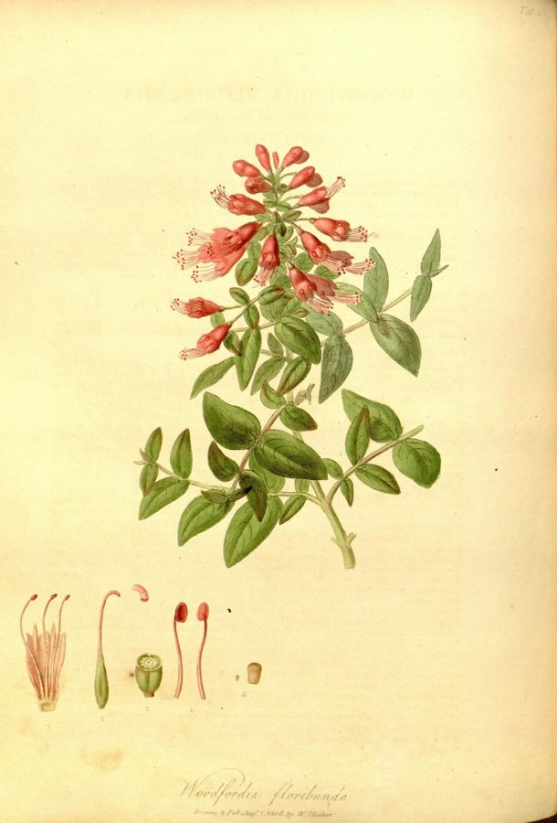

धवईFire-flame Bush
Woodfordia fruticosa · Lythraceae · FLR-0299

- Scientific name वैज्ञानिक नाम
- Woodfordia fruticosa (L.) Kurz
- Family कुल
- Lythraceae
- Hindi हिंदी
- धवई
- Local names स्थानीय नाम
- dhawai, dhai, dhau, fire flame bush
- Status here यहाँ की स्थिति
- native
- Movement आवागमन
- Resident, here all year
- Known from कहाँ दर्ज
- Others have published records from the wider Awadh–Purvanchal plain, none yet from Basti–Ayodhya अवध–पूर्वांचल से दूसरों के प्रकाशित अभिलेख, बस्ती–अयोध्या से अभी नहीं
- IUCN IUCN
- not evaluated
- Review समीक्षा
- audited and independently read
When to look कब देखें
Present all year. साल भर मौजूद।
Uses and possibilities उपयोग और संभावनाएँ
“Traditional medicine” means a documented traditional use, not a claim that it works. Nothing on this page is medical advice.
Drawn from the documented uses in the profile below, where each is labelled traditional, current or a research lead. All uses →
Tell it apart from इनसे अलग पहचानें
धवई / Fire-flame Bush
Woodfordia fruticosa (L.) Kurz — Lythraceae
धवई — एक छोटी झाड़ी जो जंगलों के किनारों, नदियों के साथ और पथरीली जमीन पर उगती है। इसके फूल सबसे अद्भुत हैं — गहरे नारंगी-लाल, ज़रा सी पीली धारीदार, गुच्छों में आते हैं, जो जनवरी से अप्रैल तक खिलते हैं। लंबे, पतले, बहुत ही सुंदर फूल। धवई का सबसे महत्वपूर्ण उपयोग डाई के लिए है — फूलों से गहरा नारंगी-लाल रंग निकलता है जो पारंपरिक रूप से कपड़े और खाद्य पदार्थों को रंगने में काम आता है। आयुर्वेद में भी इसका उपयोग होता है।
Quick Identification त्वरित पहचान
| Feature | Description |
|---|---|
| Size | Deciduous to semi-deciduous shrub, 1–3 m tall, much-branched |
| Leaves | Small, oblong to obovate, 2–6 cm, opposite, somewhat hairy |
| Flowers | Highly distinctive, bright orange-red, tubular, 1–1.5 cm long, in dense terminal spikes |
| Flower colour | Deep orange-red, often with yellow streaks |
| Fruit | Small capsule, about 4–5 mm |
| The test | Bright tubular orange-red flowers in dense spikes are unmistakable |
Field tip: In deciduous and dry forests, look for a shrub with distinctive deep orange-red, tubular flowers arranged in dense cylindrical spikes. The flowers bloom from winter through spring and are highly conspicuous against the dull landscape.
हिंदी — कैसे पहचानें: गहरे नारंगी-लाल, ट्यूबनुमा फूल घने गुच्छों में। पत्तियाँ छोटी, अंडाकार। जनवरी से अप्रैल तक पूरी झाड़ी फूलों से लदी।
Morphology आकारिकी
Biometrics (dry deciduous and semi-arid regions, northern India):
| Measurement | Range |
|---|---|
| Height | 1–3 m |
| Stem diameter | 0.5–2 cm |
| Leaf length | 2–6 cm |
| Leaf width | 1–2 cm |
| Flower length | 1–1.5 cm |
| Flower spike length | 10–20 cm |
Stem and branches: Slender, terete, much-branched from near the base, greyish-brown. Young growth reddish.
Leaves: Small, opposite, oblong to obovate, 2–6 cm long, 1–2 cm wide. Margin entire. Slightly hairy. Petiole very short, 2–3 mm.
Flowers: The most distinctive feature—highly coloured, tubular, about 1–1.5 cm long, deep orange-red, often with yellow streaks. Stamens exserted beyond the corolla. Flowers arranged in dense, terminal, cylindrical spikes 10–20 cm long. Flowers November to May, peaking January to April.
Fruit: A small, dry capsule, about 4–5 mm, containing many tiny seeds.
हिंदी: पत्तियाँ छोटी, विपरीत, अंडाकार। फूल गहरे नारंगी-लाल, ट्यूबनुमा, घने सिलेंडर स्पाइकों में। फूलों की लंबाई 1-1.5 सेंमी।
Behaviour & Ecology व्यवहार और पारिस्थितिकी
Fire-flame Bush is a pioneer shrub of dry deciduous forests, forest margins, and rocky wastelands. It tolerates poor, stony soils and drought. The shrub is semi-deciduous but retains leaves year-round in adequate moisture. The brilliant orange-red flowers bloom during the dry season and are visited by bees, butterflies, and sunbirds. The shrub coppices readily after cutting or fire. Historically it was harvested for its dye-producing flowers.
हिंदी: सूखी जंगलों और पथरीली जमीन में पनपता है। सूखे को सहन करता है। फूलों में डाई होती है जो रंगने के लिए काम आती है। आग के बाद भी फिर से निकल आता है।
Life Cycle / Phenology जीवन चक्र
| Month / season | Event |
|---|---|
| November–December | Flowering begins as dry season advances |
| January–April | Peak flowering; entire plant often covered with spikes |
| May–June | Flower production declines as heat increases |
| July–October | Vegetative growth during and after monsoon |
| 2–3 years from seed | First flowering |
Seeds are tiny and germinate readily on disturbed soil. Growth is rapid on good sites. Lifespan reaches 20–40 years.
हिंदी: नवंबर में फूल शुरू होते हैं। जनवरी-अप्रैल तक पूरी झाड़ी नारंगी-लाल फूलों से ढकी। गर्मी के आखिरी तक फूल गिर जाते हैं।
Associated Species / Interactions संबंधित प्रजातियाँ
- Pollinator visitors: Asian Honey Bee and sunbirds on flowers.
- Seed dispersal: Wind and water dispersal of tiny seeds.
Pests and Diseases कीट और रोग
- Leaf-eating insects during monsoon; rarely serious.
- No significant fungal diseases in dry climates.
Agricultural / Human Relevance कृषि प्रासंगिकता
Traditional and ethnobotanical use:
- Natural dye. The flowers, and to some extent the leaves, contain pigments that produce orange-red colours. Traditionally, flowers are dried and used as a dye source for textiles, particularly silk and wool. The dye is also used in traditional food colouring.
- Traditional medicine. In Ayurvedic texts, the plant is documented for use in skin conditions and as an astringent. Used in traditional preparations for dysentery and diarrhoea.
- Fodder. Leaves are lopped for goats and sheep during dry seasons, though not preferred by livestock.
Today. Interest in natural dyes has led to renewed interest in Dhawai. Commercial dye sources remain primarily wild-harvested.
Research direction (a lead, not a result). The chemistry of Woodfordia dyes, their fastness properties compared to synthetic dyes, and the economics of cultivation for dye production would merit investigation. Traditional extraction methods deserve documentation.
हिंदी: फूलों से नारंगी-लाल डाई निकलता है। खाने की चीजों को रंगने में भी काम आता है। आयुर्वेद में दस्त के लिए। पत्तियाँ पशुओं को खिलाई जाती हैं।
Expected Locally स्थानीय रूप से अपेक्षित
Not a field record. Written from published accounts for eastern Uttar Pradesh. No confirmed local sighting yet — if you have seen it, that is what the atlas needs.
अभी तक स्थानीय पुष्टि नहीं। यह विवरण प्रकाशित स्रोतों से है, किसी अवलोकन से नहीं।
GBIF holds published records from the wider Awadh–Purvanchal plain. Fire-flame Bush is expected in dry deciduous forests and rocky forest margins of eastern Uttar Pradesh. The brilliant orange-red flowers in winter and spring make it conspicuous when in bloom.
Distribution वितरण
Global range: Distributed across South Asia and Southeast Asia from India through Myanmar and Thailand to southern China.
In India: Found in deciduous and dry deciduous forests throughout the Indo-Gangetic plain and peninsular India, up to about 1,200 m elevation.
In Uttar Pradesh: Scattered in eastern dry deciduous forests and forest margins; less common in wetter regions.
In Basti district / eastern UP: Expected in dry deciduous forests and margins; exact distribution not yet documented.
Research Questions शोध प्रश्न
- How much dye can be extracted from flowers of a single Dhawai shrub per flowering season? — Collect flowers; dry and prepare extract; test dye yield.
- Which birds and insects visit the flowers for nectar, and how frequently? — Thirty-minute observations at flowering shrubs.
- What is the natural regeneration rate of Fire-flame Bush seedlings in its habitat? — Mark plots; count seedlings through monsoon.
- How is traditional Dhawai dye extracted and applied to textiles? / धवई की डाई को परंपरागत रूप से कैसे निकाला और लगाया जाता है? — Interview dyers; document methods.
- Can Dhawai be cultivated at scale for dye production? — Establish plots with different soil and water treatments; track growth and flower production.
Similar Species मिलती-जुलती प्रजातियाँ
| Species | How to tell apart | हिंदी |
|---|---|---|
| Palash (Butea monosperma) | Larger shrub; parrot-beak shaped orange flowers; trifoliate leaves | बड़ी झाड़ी; तोते की चोंच जैसे फूल; तीन पत्ते |
| Kaner (Nerium oleander) | Larger shrub; evergreen; pink or red flowers with pointed lobes; linear leaves | सदाबहार; चमकदार पत्तियाँ; बाग़ में |
Field rule: A slender deciduous shrub with small leaves and dense spikes of brilliant orange-red tubular flowers blooming in winter is Fire-flame Bush.
Taxonomy & Classification वर्गीकरण
Original description. Originally described as Lythrum fruticosum by Linnaeus (1753) based on specimens from India. Later transferred to Woodfordia by Kurz in 1877. Type locality is India.
Subspecies. Monotypic — no subspecies are currently recognised.
Family and order placement. Order Myrtales, family Lythraceae (the loosestrife family, including crape myrtles and punicaes). The genus Woodfordia contains only this species.
Phylogenetic notes. Woodfordia fruticosa represents a monotypic genus within the broader Lythraceae, which includes ornamental shrubs and trees.
IUCN status rationale. Not evaluated. Scattered in suitable habitats but not globally threatened.
Photo Gallery फोटो गैलरी
No photos yet — add field photos to media/species/fire_flame_bush/ and run node scripts/sync_photos.js.
Wanted photos:
- Whole shrub in dry forest setting
- Dense flower spikes with orange-red tubular flowers
- Flowers in close-up
- Plant in full bloom (January–April)
- Seeds/fruits
- Person harvesting flowers for dye
References संदर्भ
- Linnaeus, C. (1753). Species Plantarum. Laurentius Salvius, Holmiae. Vol. 1.
- Kurz, S. (1877). Forest Flora of Burma. Vol. 1. Pegu Press, Calcutta.
- Hooker, J.D. (1879). The Flora of British India. Vol. 2. L. Reeve & Co., London.
- Duthie, J.F. (1903). Flora of the Upper Gangetic Plain and of the Adjacent Siwalik and Sub-Himalayan Tracts. Vol. 2. Government Printing, Calcutta.
- Kirtikar, K.R. & Basu, B.D. (1935). Indian Medicinal Plants. 2nd ed. Vol. 1. Lalit Mohan Basu, Allahabad.
- GBIF Occurrence Data — Woodfordia fruticosa, India.
Source file: species/flora/shrubs/fire_flame_bush.md